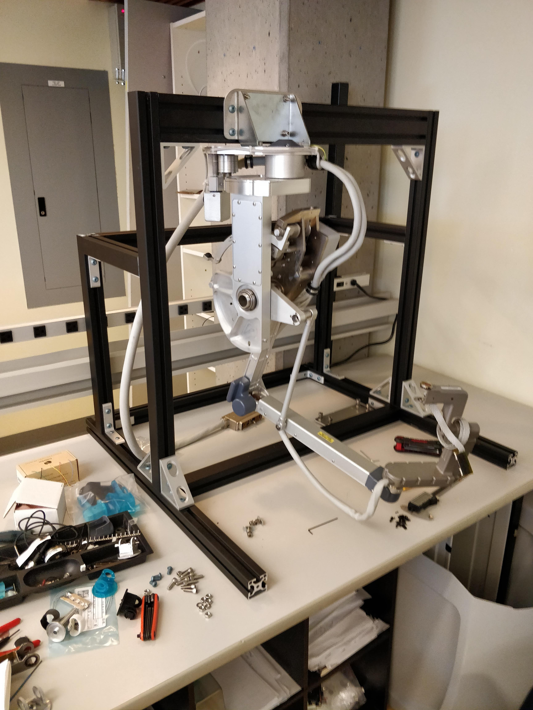
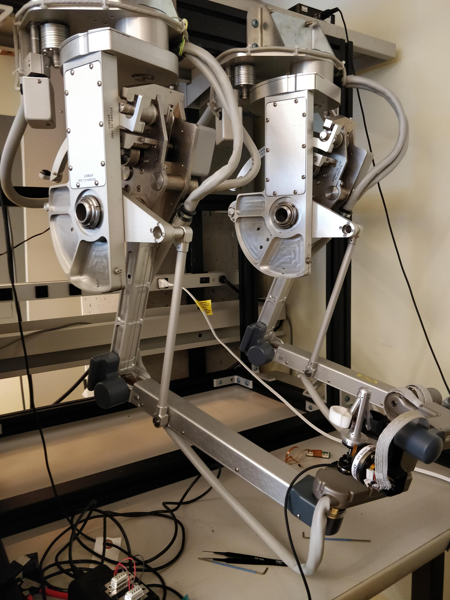
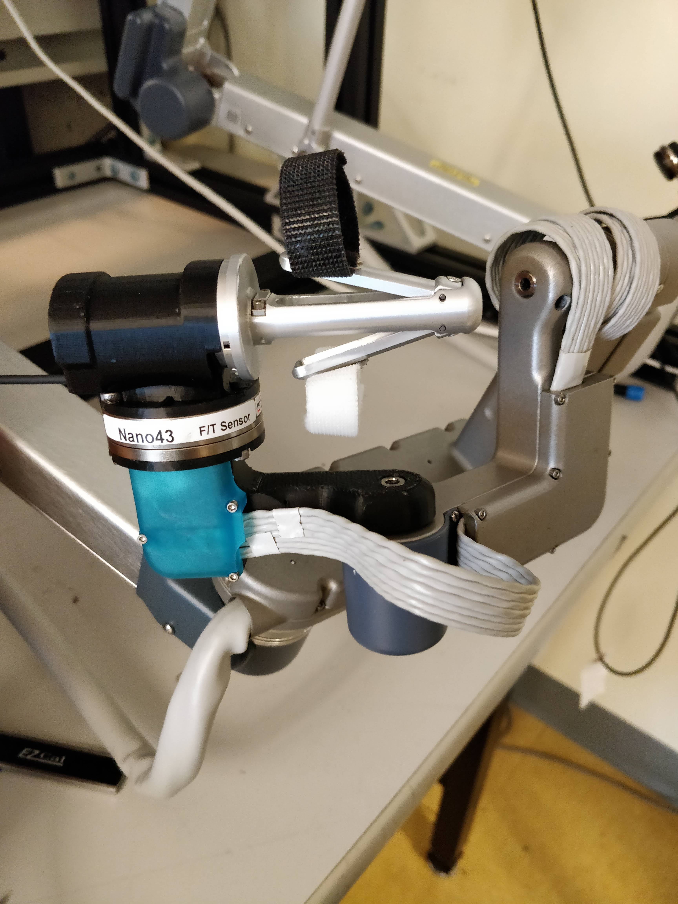
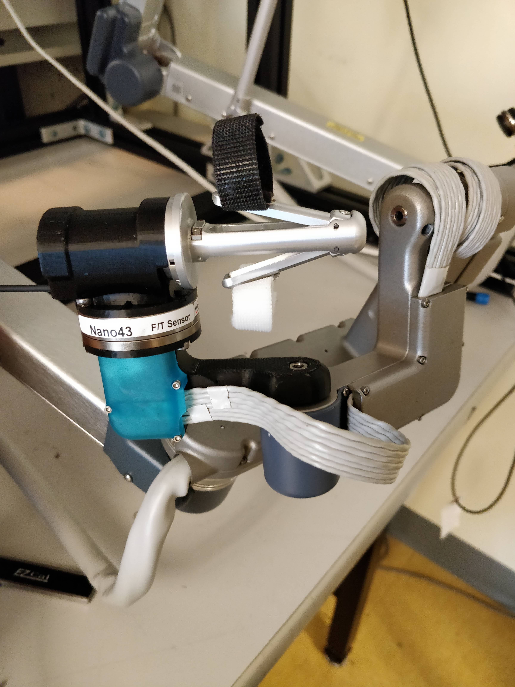
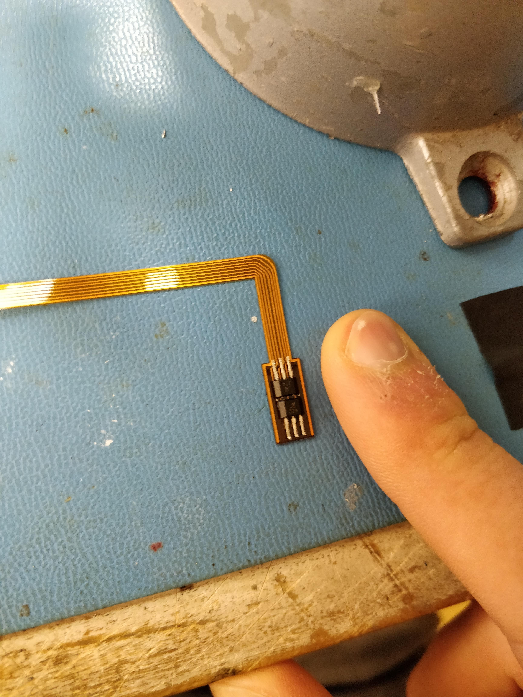
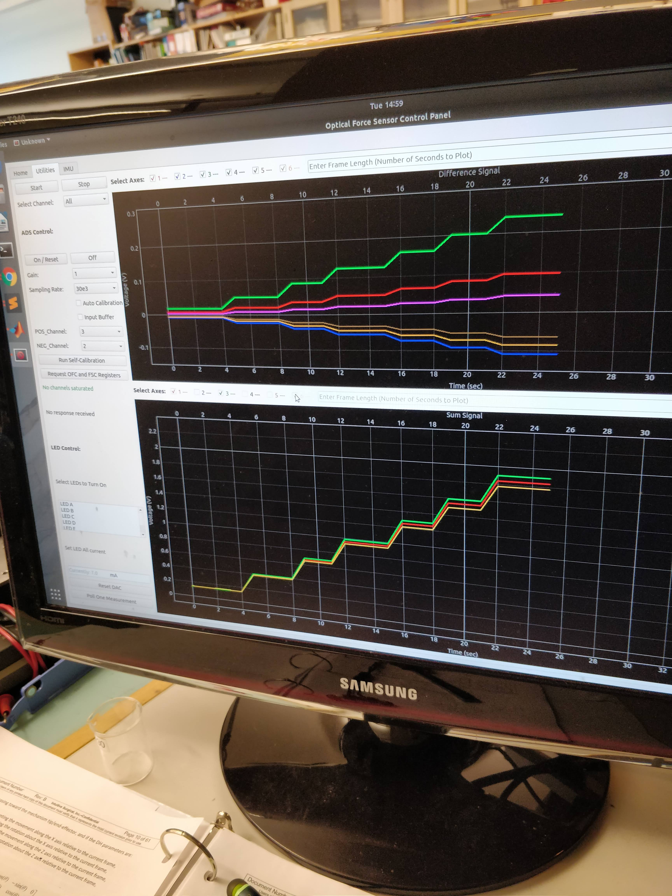
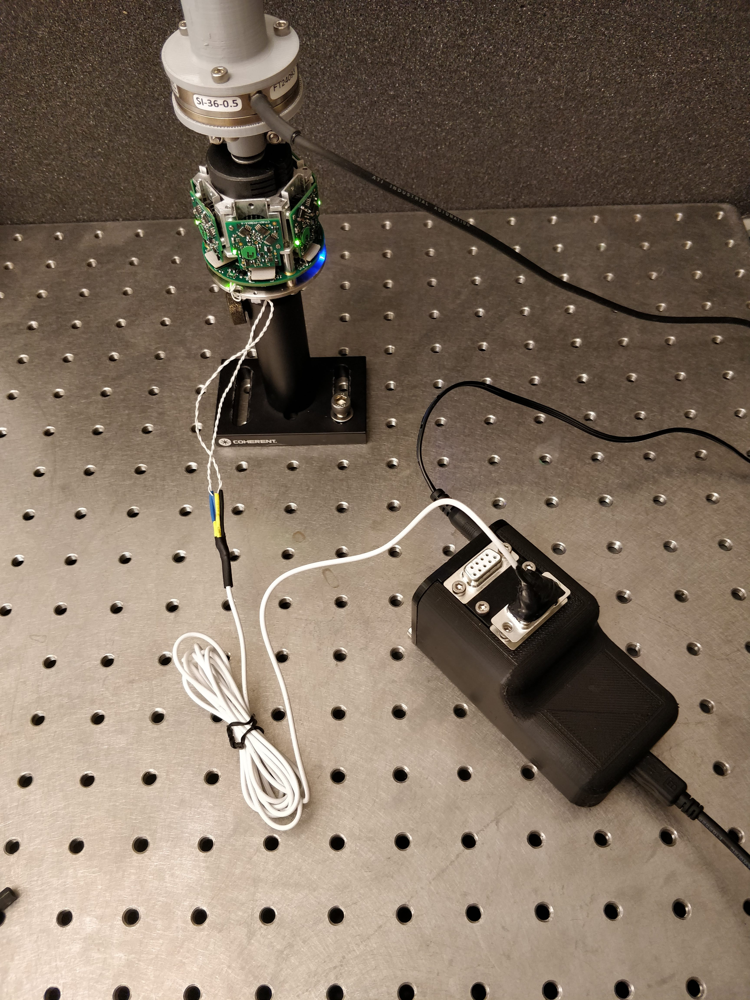
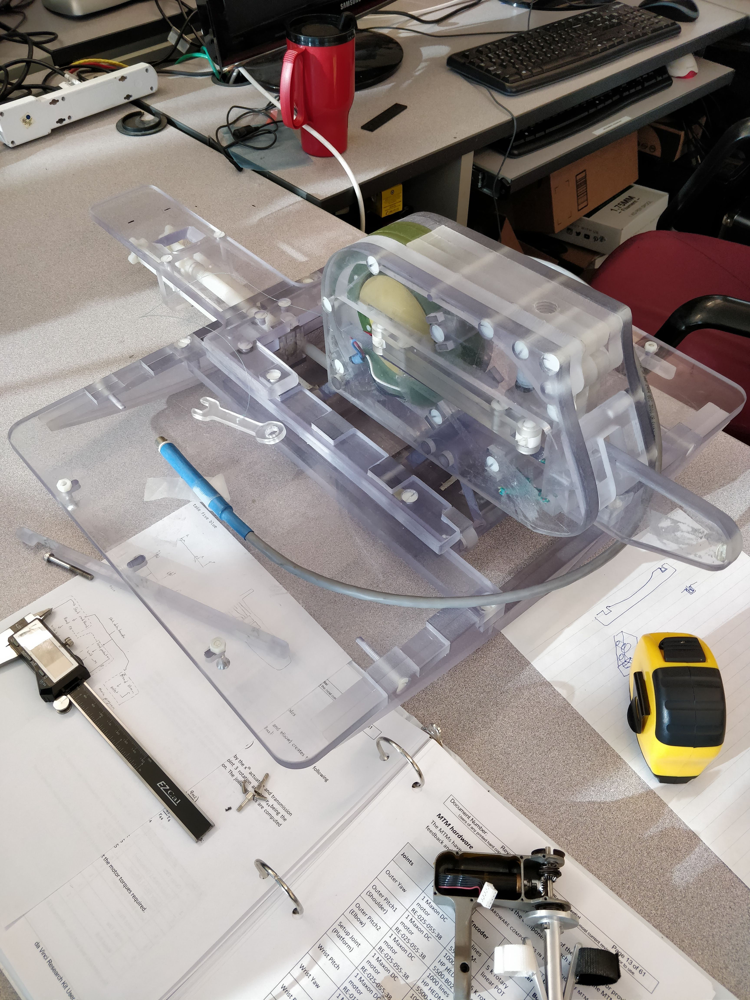

Robotics and Control Lab (RCL) Coop
Date: May - December 2019
I did an 8 month internship in Dr. Tim Salcudean’s lab at the University of British Columbia in 2019, working towards a haptic feedback system for the da Vinci surgical robot. I redesigned the wrist of the master arm to integrate a force sensor with minimal impact on the robot’s kinematics or dynamics. I also implemented various experiments and applications using the design and the robot’s complex teleoperation and control systems. This involved mechanical and electrical design and prototyping, working with Robot Operating System (ROS), C++, Python, and MATLAB, as well as kinematics, and dynamic model identification. I also helped design a real-time communication and control system for a novel 6-axis force/torque sensor with IMU and temperature sensing.
Publication
After the first 4 months of the coop, I wrote a paper which has now been published in Robotics and Automation Letters and the International Conference for Robotics and Automation in Paris in 2020. The paper gives much more detail about the design pictured below and can be downloaded here:
6-DOF Force Sensing for the Master Tool Manipulator of the da Vinci Surgical System
We also wrote a paper entitled Ultra Low-Noise FPGA-Based 6-Axis Optical Force-Torque Sensor: Hardware and Software which was published in IEEE Transactions on Industrial Electronics in September 2020. I am second author on this paper, having written much of the control software and helped develop the firmware of the force sensor.
Highlights of the Work Done
The RCL Lab works closely with Intuitive to perform groundbreaking research with the da Vinci Robot. As such, we were given two master manipulators. I first designed and built a simple frame to mount the two arms (Master Tool Manipulaters, i.e. MTMs):
 
I then began reverse-engineering the MTM wrist yaw link, and modified it mechanically and electrically to integrate a 6-axis ATI Nano43 force/torque sensor without changing the kinematics of the robot. This involved complex CAD modelling and a variety of manufacturing processes as we went through a number of prototypes, trying to fine-tune the rigidity, weight and tolerances to minimize impact on friction, flexing, and inertia, and thus the robot dynamics and operator feel.
One idea in CAD

We tried waterjet cutting the part. The result can be seen here:
Unfortunately, this led to higher friction and was heavier, though its rigidity was excellent.
The final 3D-printed part, with electrical modifications
 

The electrical design included creating a flexible PCB to connect to the finger grips

Once the mechanical and electrical design and fabrication were complete, I integrated the force sensor and modified wrist into the teleoperation system of the da Vinci robot. I also implemented a few example applications that are described in the paper above. This involved programming in C++ and Python with ROS, da Vinci Research Kit, and the CISST/SAW architecture.
An overview video of one of the applications can be viewed here:
Finally, I implemented a dynamics identification routine for the arm. This involved developing a physical model of the mixed serial and parallel manipulator, then creating an optimal trajectory for the arm to move through that most excites the dynamics. By giving torque commands and recording the resultant joint velocities, the data could be fitted to the physical model using a convex optimization algorithm to obtain the dynamic parameters (inertia, damping, friction, etc.) of each joint. Using this method, we found that the addition of the force sensor only marginally increased the inertia of the wrist yaw link.
In parallel to this project, I wrote a communication and control system for a novel optical force sensor being designed by a PhD student at the lab. The sensor's design allows it to pick up nm deflections of the rod it is mounted on, and it runs at high speeds of 6.85MBaud with a 5kHz sampling rate. The sensor is described in more detail here. The sensor interfaces to a host computer using data packets sent over RS-485 to USB and PCIe, with Cyclic Redundancy Check error checking. I designed the host-PC side of this interaction using the Linux Comedi C++ libraries with a Python wrapper for low level control, and a GUI for real-time plotting and user sensor control.
I also designed a control box to interface between the host Linux computer and the sensor. The design was made to be modular, and to allow easy reparations or modifications by ensuring one does not have to solder awkwardly inside the box. The design can be seen here: Control Box Design:
Screenshot of the User Interface

The Sensor with Control Box

Finally, I also implemented modifications in an MRI compatible shaker for MRI elastography of the prostate. The modifications ensured the plastic bolts would not shear under the stress and heat generated by the shaking, as polycarbonate bolts had done before. They also made the the shaker more steadily hold its position in the rails of the MRI bed.
MRI Shaker
